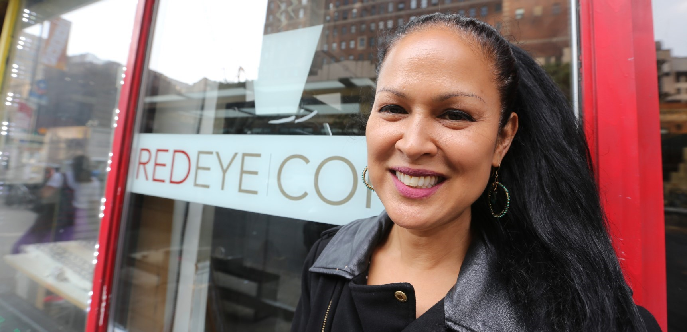
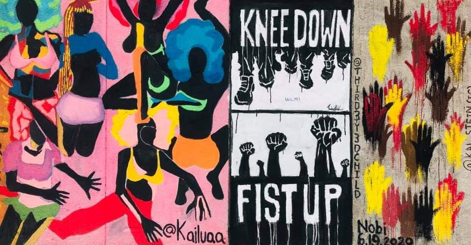

Our People Funded Campaign Needs Your Help
If you believe there needs to be major change to restore democracy at City Hall, come join us!
We are a completely citizen-powered grassroots campaign with no money from real estate or special interests.
As a real voice for ordinary people — who are too often voiceless.
Qualifying for matching funds will give us an 8 to 1 match. So your $10 donation becomes $90.
Your $25 donation becomes $225. Your $100 becomes $900. And your $175 becomes $1,575, so every
donation matters! Thank you!

IM RUNNING FOR CITY COUNCIL IN 2021 IN DISTRICT 3 AS A TRUE PROGRESSIVE DEMOCRAT
As the daughter of Jordanian and Phillipino immigrants, my focus has always been
advocating for the less fortunate. I’m a community activist fighting to save tenants' homes,
a small business owner advocating to save our stores, a former lawyer adept at calling out corruption, and professional figure
skating coach brightening the future of our children. Most of all, I’m a New Yorker committed to restoring democracy at City Hall.
As a part of a new generation of activists getting involved with electoral politics, I am not afraid
to call out machine lawmakers for do-nothing policies that work against the communities they represent.
My advocacy has inspired tenants to organize, independent contractors to form collectives, and ordinary
people to get politically-engaged. I’m here to:
Champion Tenants Rights
Save Small Businesses & Jobs
Rally for Independent Contractors’ Rights
Refuse Real Estate and Special Interest Money
My husband Peter Cecere and I were owners of Red Eye Coffee, which we were forced to close due to unaffordable rents.
We lost our small business because we had no rights to negotiate fair lease terms, and sadly, this is not an isolated
case. I’ve been fighting for the Jobs Survival Act, which gives all commercial tenants a right to a long term lease
renewal, the right to equally negotiate fair lease terms and the right to an arbitration process if a mutual agreement
cannot be reached. I’m fighting to stop the landlords from passing along their property taxes to their tenants. With
your vote, we can hold landlords accountable.
Since Occupy Wall Street, I have been a known figure involved in political protests throughout NYC.
I have protested at City Council Speaker Corey Johnson’s district office, confronting him for refusing
to pass a bill that would save small businesses like mine. I make my voice heard, protesting against racism
and police brutality-- and I am an avid proponent of election integrity, striving to ensure that residents
in my district participate in our democracy.
As a businesswoman, I also intend to reform inefficient agencies and cut fraud and waste while rebuilding revenue generators
like our small businesses. It's time taxpayers get a break and get rid of corrupt political machines and special interests.
Join my fight to lower taxes!
ABOUT ME
As a resident of Chelsea and Hell's Kitchen for the past 28 years, my unique background as a small business owner,
community activist, figure skating coach and lawyer — professions outside of the political machine — make me the
strongest candidate for City Council in 2021. I lead with the people’s best interests at heart, and will make immediate
changes at City Hall.
As a small business owner, I started Community Control of Land Use
to educate and organize small business owners, pushing for legislation that would give them rights to an affordable
and renewable lease.
As a figure skating coach at Chelsea Piers, I have spent 28 years teaching children the joy and discipline of figure
skating. I educated parents on instilling life lessons, allowing their children to fully realize their dreams. I was
also one of the primary organizers in a campaign to collectively organize figure skating coaches against being
misclassified as employees, and the founder of NYCHA Kids Skate!-- a program to teach pro bono children living in public housing.
Whether I am teaching skating students, or fighting with small businesses for progressive legislation, I have always fought for my
community. All of my experiences have shaped my drive to make all New York communities more just and equitable. I want to fight for
a home and job for every New Yorker, and guarantee quality healthcare to all. I am ready to put power back in the hands of the
people, and fight for my community in District 3.

ORDINARY PEOPLE CAN MAKE A DIFFERENCE IF THEIR VOICES ARE LOUD ENOUGH
In 2019, I fought alongside tenants living in NYCHA Fulton, Elliott Chelsea and Harborview Houses against RAD,
a privatization scheme by developers to evict public housing residents — protesting in front of elected officials' homes.
My efforts, alongside other activists, pushed Mayor Bill DeBlasio to create a Working Group for NYCHA residents in District
3 — the only working group created in the city. I continue to fight for public housing by creating effective social media
campaigns that expose corruption and negligence during the COVID-19 pandemic.
SMALL BUSINESS ADVOCATE PUSHES SPEAKER JOHNSON TO SAVE SMALL BUSINESS AND GIVE AN HONEST PUBLIC HEARING
One of Marni’s significant accomplishments from running against Corey Johnson in 2017 was that he gave the Survival Act/SBJSA a
public hearing a year later in October 2018. The day of the public hearing, Marni organized a press conference that morning to
show the public hearing was a sham and rigged in favor of real estate interests. Speakers at Marni’s event — known activists
(including Takeback NYC, Humanscale, Professor Tom Angotti and Naureen Akhter, policy advisor for Congresswoman Alexandria
Ocasio-Cortez) — called for City Council and Speaker Johnson to move and pass the Survival Act, the only solution to the
crisis of small business closings. As a small business owner pushed out by exorbitant rents, Marni continues to push Speaker
Johnson and Mayor DeBlasio on this issue.
COUNCIL CHALLENGER PUSHES COREY JOHNSON TO STOP TAKING REAL ESTATE MONEY
Another accomplishment from Marni’s first campaign in 2017 was to examine and call out Corey Johnson’s cozy relationship to real
estate and development special interests. Analyzing 168 individual donors, Marni’s campaign team found that 68% of his $485K in
campaign contributions (as of September 2017) stemmed from donors directly linked to real estate, Wall Street, nightlife and
corporate philanthropy — industries known for gentrifying of the district. After her relentless efforts to make such relationships
o the public via social media, the Speaker made the decision to stop taking real estate money a year and a half later.
See the website: Corey Quinn for Mayor.com.
Outside of politics, Marni — a US Figure Skating Double Gold Medalist and 4-time Gay Games Gold Medalist in Ice Dance -- coaches
the nationally-ranked bronze medalist skating team, the Sky Rink All Stars. The All Stars, consecutive US Figure Skating Showcase
National Medalists from 2013 to 2019, are one of the most decorated teams in the nation. She also created NYCHA Kids Skate!, a
pro-bono program to teach children from public housing how to skate.
A HISTORY OF PROTESTING INJUSTICE
Before her foray into local politics, Marni was known for creative protest, spreading progressive messages in the form of
performance art in the mainstream media. Her protest group, Revolution Is Sexy, founded during Occupy Wall Street, utilizer
her skills as a theatrical personality to raise awareness of often complicated financial issues to make digestible to the
public. In addition to performance, Marni also organized protests, press conferences and helped groups liaison with reporters
to cover issues like income inequality, universal healthcare and the racism of Donald Trump.
AN OBSERVER AND WRITER OF LOCAL POLITICS
Frequently asked to speak on the inner workings of local politics, Ms. Halasa can be often at rallies at City Hall, the
Left Forum Conference and Midtown South Community Council. Her populist political voice has been published in articles
and op-eds for New York Daily News, The Villager, Metro New York, Chelsea Now, Westview News, 42st Magazine and The Clinton
Chronicle. She was a former reporter and editor for the New York Law Journal and The Bond Buyer.